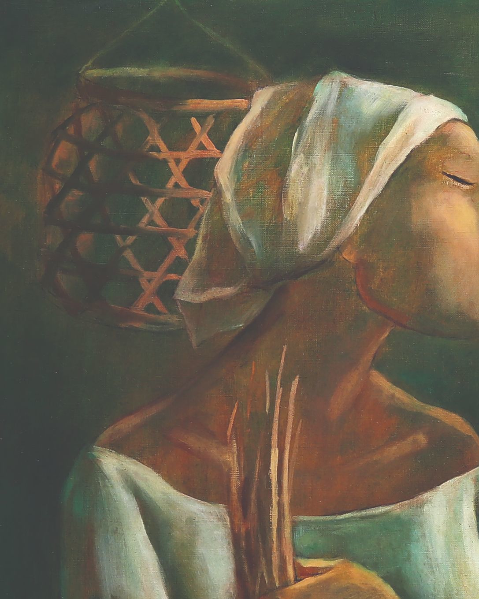
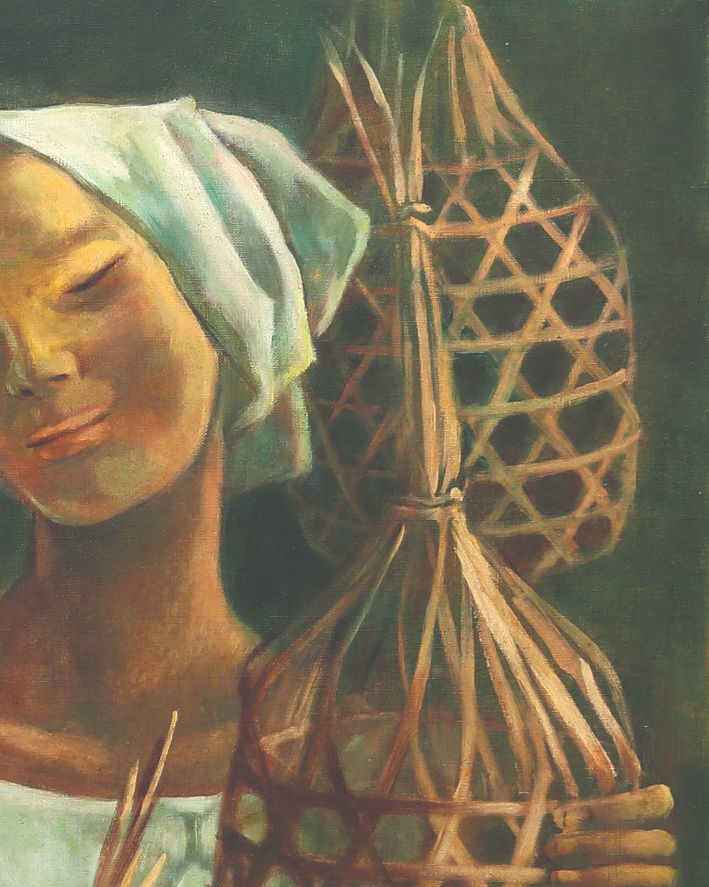
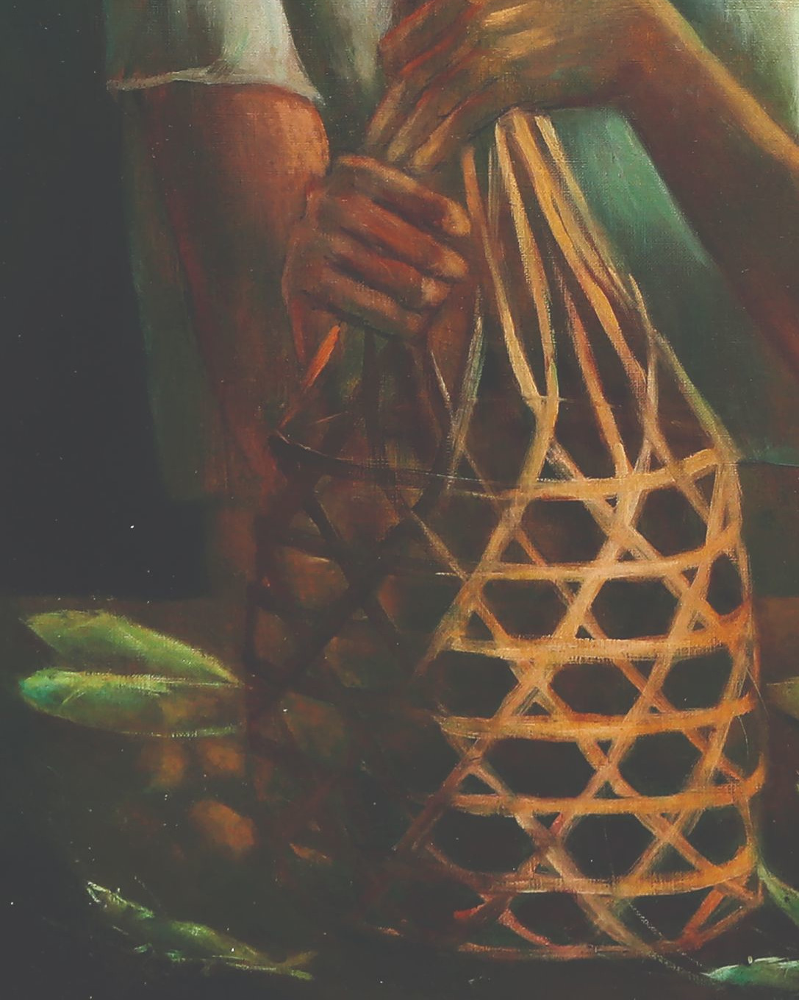
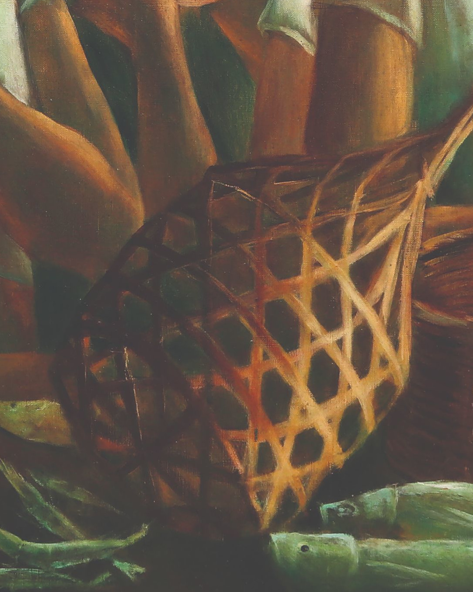

This artwork by Anita Magsaysay-Ho portrays Filipino women engaged in traditional livelihood activities. Known for her modernist style, Magsaysay-Ho highlighted the strenght, grace, and dignity of rural women through harmonious composition and earthy tones.



